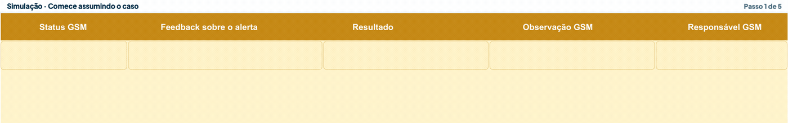
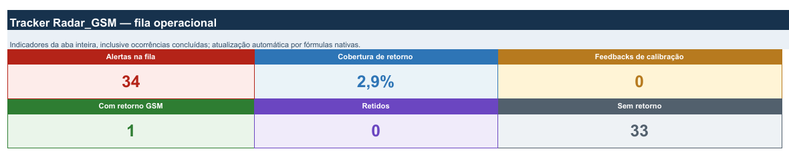

01
Abra a Fila GSM
No card do Radar, use “Acessar Planilha” e localize o protocolo.
O Tracker do Radar GSM guarda quem assumiu cada alerta, o andamento da tratativa e o desfecho informado pela GSM. Ele é a memória operacional do piloto.
Comece aqui
Siga esta sequência sempre que assumir um caso do Radar.
No card do Radar, use “Acessar Planilha” e localize o protocolo.
Confira a evidência principal e o próximo passo sugerido pela Vesta.
Veja o histórico mais recente. O atendimento pode ter mudado após o Radar.
Atualize Status GSM, Feedback, Observação GSM e Responsável GSM.
Quando houver um desfecho, informe o Resultado e confira os campos obrigatórios.

Como preencher
Abra apenas o campo que precisa consultar. Status mostra o andamento; Feedback avalia o alerta; Resultado registra o desfecho.
Atualize o Status GSM e a Observação GSM. Informe o Feedback quando já puder avaliar.
Responsável GSM sempre obrigatório.Feedback e Resultado são obrigatórios. Use Resultado somente quando a conclusão estiver confirmada.
Explique feedback parcial/incorreto ou “Outro desfecho”.O Feedback é obrigatório e o Resultado é opcional.
Observação GSM e Responsável GSM obrigatórios.O caso será encaminhado para uma nova análise da Vesta e continuará em acompanhamento até a revisão ser concluída.
Acompanhar o piloto
Na gestão diária, comece por Sem retorno, Cobertura de retorno e Com retorno GSM. Estes números medem o uso do Tracker, não os indicadores do card do Radar.

Ocorrências que ainda não receberam nenhuma informação da GSM.
Aponta pendência de registroPercentual das ocorrências que já possuem algum retorno da GSM.
Mede cobertura, não conclusãoOcorrências em que ao menos um campo da GSM já foi preenchido.
Mostra atuação registradaUniverso de ocorrências acompanhado na versão atual.
Alertas avaliados como parcialmente corretos ou totalmente incorretos.
Casos cujo desfecho informado pela GSM foi “Cliente retido”.
Uma ocorrência pode ter responsável e status preenchidos, mas continuar em análise, em tratativa ou aguardando o cliente.
Para consulta
O trabalho acontece na Fila GSM. Use as outras abas para orientação e conferência.
Treinamento
Em um único vídeo, acompanhe o fluxo completo: localizar o alerta, conferir o contexto no OPA Suíte e registrar corretamente o retorno no Tracker.
Substitua o ID do YouTube (não listado) no atributo data-youtube-id.
0Y4tsKLC-A4Veja como trabalhar na Fila GSM, preencher os campos de acompanhamento, interpretar as pendências e manter a rastreabilidade do piloto.
Dúvidas rápidas
Não. Uma ocorrência que entrou como alerta vermelho permanece no Tracker enquanto houver uma pendência da GSM, mesmo que a criticidade mude ou o caso deixe a seleção atual do Radar.
Não. É um Status GSM intermediário. O resultado deve ser informado somente quando houver um desfecho conhecido.
Não. Descreva o que estava correto e o que precisa ser ajustado. Essa observação orienta a nova análise da Vesta.
Não. Ele pode sair da visão ativa, mas permanece preservado no histórico do Tracker.